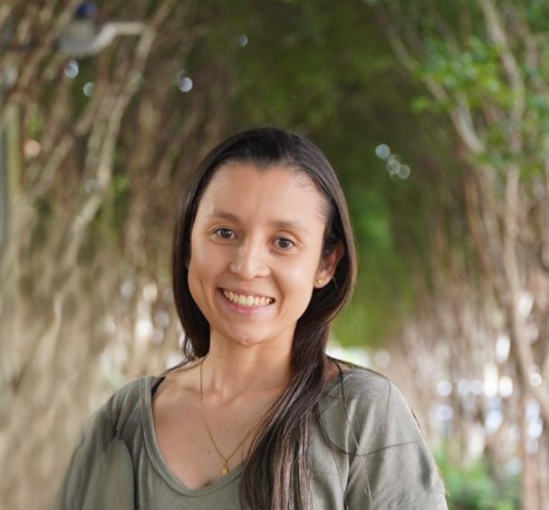

Hola! mi nombre es Maria Camila Méndez
Soy una profesional con una trayectoria en Ingeniería Química apasionada con la tecnología y la educación. Mi habilidad para combinar conocimientos técnicos con soluciones creativas me permite contribuir con equipos multidisciplinarios e innovadores